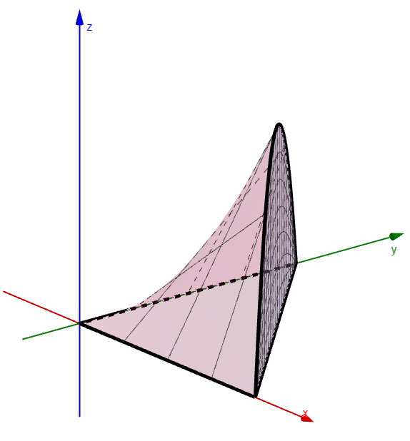
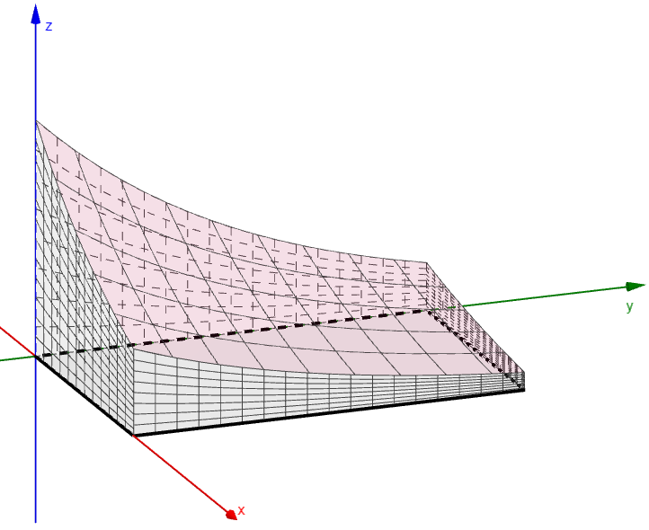

Double Integrals and Volume
Earlier, we found the volume of a solid above or below a rectangular region, first with the limit of a Riemann sum and then with a double integral. Then we extended these calculations to any region, not just rectangles.
In this lesson, we use double integrals to find the volume of a solid above a region \(R\) in the \(xy\)-plane and below a surface given by a function \(f(x, y)\).
Volume Under a Surface
An Example
Let \(R\) be the region in the \(xy\)-plane bounded by \(x = 0\), \(y = 0\), and \(y = 2 - x\). Consider the solid bounded below by \(R\) and bounded above by the surface below. Use a double integral to find the volume of this solid.

The region is a triangle: \(x\) runs from \(0\) to \(2\), and \(y\) runs from \(0\) up to the line \(y = 2 - x\).
The volume is 6 cubic units.
An Example
Let \(R\) be the region in the \(xy\)-plane bounded by \(0 \le x \le 4\) and \(0 \le y \le 7\). Consider the solid bounded below by \(R\) and bounded above by the surface below. Use a double integral to find the volume of this solid.

Write the function as \(e^{-x} e^{-y}\). The integral then separates into two single integrals.
The volume is \(\left(1 - e^{-4}\right)\left(1 - e^{-7}\right) \approx 0.9808\) cubic units.
An Example
Let \(R\) be the region in the \(xy\)-plane bounded by \(0 \le x \le \frac{\pi}{2}\) and \(0 \le y \le 16\). Consider the solid bounded below by R and bounded above by the surface below. Use a double integral to find the volume of this solid.
The volume is \(256\pi + 16 \approx 820.25\) cubic units.